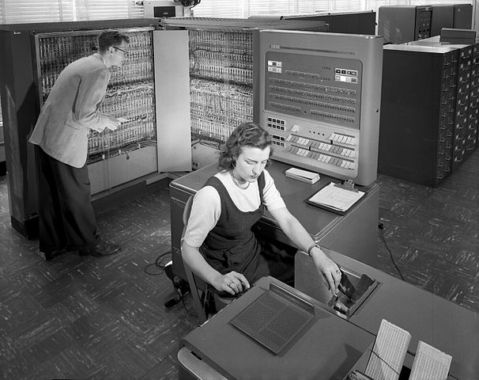
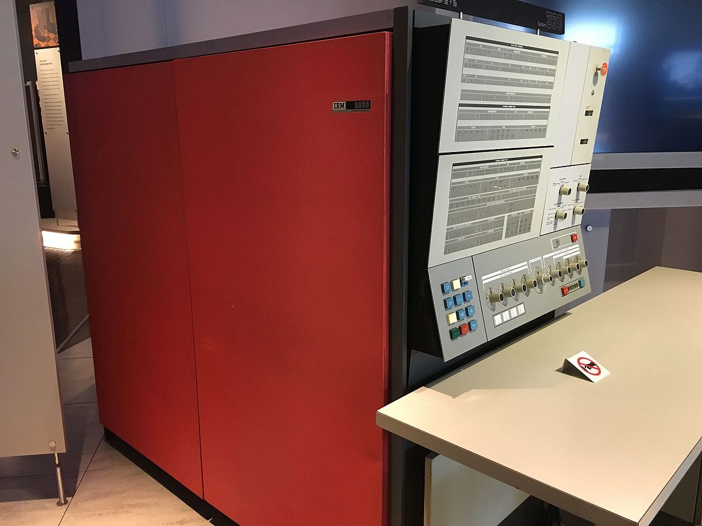
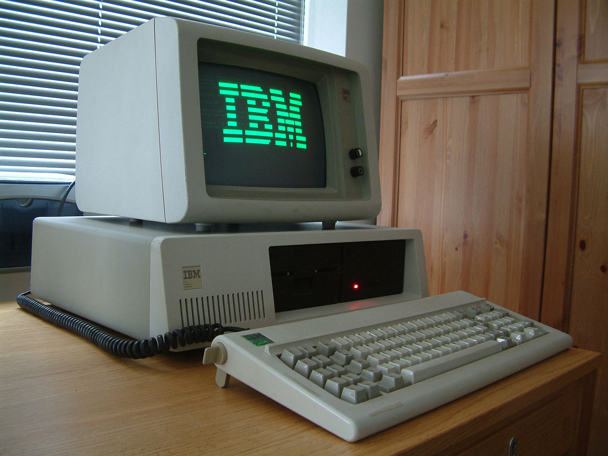

Marcel Lüthi Departement Mathematik und Informatik
Weshalb braucht es historischen Kontext?
Wer die Geschichte nicht kennt, wird sie wiederholen.
Innovation löst immer ein Problem
Problem / Lösung stark von Kontext beeinflusst
Besseres Verständnis von Methodik/Ansatz
Vor 1950
Kein Software-Engineering - Nur Programmierung
Wohldefinierte Probleme
Beispiel: Lösen einer Differentialgleichung
Programmierer waren meistens Physiker
By Venusianer at the German language Wikipedia, CC BY-SA 3.0, https://commons.wikimedia.org/w/index.php?curid=3632073
1:1 zwischen Programmierer und Computer
Vor 1950
Programmiersprachen:
Hauptsächlich Assembler
FACTO CSECT
USING FACTO,R13
SAVEAREA B STM-SAVEAREA(R15)
DC 17F'0'
DC CL8'FACTO'
STM STM R14,R12,12(R13)
ST R13,4(R15)
ST R15,8(R13)
LR R13,R15 base register and savearea pointer
ZAP N,=P'1' n=1
LOOPN CP N,NN if n>nn
BH ENDLOOPN then goto endloop
LA R1,PARMLIST
L R15,=A(FACT)
BALR R14,R15 call fact(n)
ZAP F,0(L'R,R1) f=fact(n)
DUMP EQU *
MVC S,MASK
ED S,N
MVC WTOBUF+5(2),S+30
MVC S,MASK
ED S,F
MVC WTOBUF+9(32),S
WTO MF=(E,WTOMSG)
AP N,=P'1' n=n+1
B LOOPN
ENDLOOPN EQU *
RETURN EQU *
L R13,4(0,R13)
LM R14,R12,12(R13)
XR R15,R15
BR R14
FACT EQU * function FACT(l)
L R2,0(R1)
L R3,12(R2)
ZAP L,0(L'N,R2) l=n
ZAP R,=P'1' r=1
ZAP I,=P'2' i=2
LOOP CP I,L if i>l
BH ENDLOOP then goto endloop
MP R,I r=r*i
AP I,=P'1' i=i+1
B LOOP
ENDLOOP EQU *
LA R1,R return r
BR R14 end function FACT
DS 0D
NN DC PL16'29'
N DS PL16
F DS PL16
C DS CL16
II DS PL16
PARMLIST DC A(N)
S DS CL33
MASK DC X'40',29X'20',X'212060' CL33
WTOMSG DS 0F
DC H'80',XL2'0000'
WTOBUF DC CL80'FACT(..)=................................ '
L DS PL16
R DS PL16
I DS PL16
LTORG
YREGS
END FACTO
1950-1960
Programmierer wird zum Beruf
Programmieren bleibt single-player Game
Neu:
Programmierer != User
Erste grosse Software Projekte
Beispiel CTSS Betriebssystem

By NASA - Great Images in NASA Description, Public Domain, https://commons.wikimedia.org/w/index.php?curid=6455009
Anforderungen müssen kommuniziert werden.
1950 - 1960
Programmiersprachen
Fortran, Lisp, Cobol
(defun fact (n)
(if (< n 2)
1
(* n (fact(- n 1)))))
FUNCTION FACT(N)
INTEGER N,I,FACT
FACT=1
DO 10 I=1,N
10 FACT=FACT*I
END
1960-1970
Erste grosse, kommerzielle Softwaresysteme
Grenzen des Programmierens werden ersichtlich.
Programmiertechniken skalieren nicht
Begriff der Softwarekrise
Software Engineering wird erfunden

By ArnoldReinhold - Own work, CC BY-SA 3.0, https://commons.wikimedia.org/w/index.php?curid=47096462
1960-1970
Probleme:
Kommunikationsoverhead
Was passiert wenn Programmierer geht
Teueres "on boarding"
Änderungen in einem System beeinflusst andere Systeme
Kommunikation/Informationsfluss und Modularisierung werden wichtig.
1960-1970
Lösungsansätze:
Teamorganisation
Neue Programmiersprachen
Programmierrichtlinien
Formale Modelle
1960 - 1970
Programmiersprachen
Simula, Basic, PL/I
factorial: procedure (N) returns (fixed decimal (30));
declare N fixed binary nonassignable;
declare i fixed decimal (10);
declare F fixed decimal (30);
if N < 0 then signal error;
F = 1;
do i = 2 to N;
F = F * i;
end;
return (F);
end factorial;
1970-1990
Stetiger Fortschritt
Bessere Sprachen / Tools
Mainstream: Strukturierte Programmierung
Forschung: Objektorientierte Programmierung
Besseres Verständnis der Prozesse

By ArnoldReinhold - Own work, CC BY-SA 3.0, https://commons.wikimedia.org/w/index.php?curid=47096462
Einsicht: Es ist schwierig! (no silver bullet!)
1970 - 1990
Programmiersprachen
C, Smalltalk, ML
int factorial(int n) {
int result = 1;
for (int i = 1; i <= n; ++i)
result *= i;
return result;
}
fun factorial n =
if n <= 0 then 1
else n * factorial (n-1)
1990 - Heute
Internet
Computer sind günstig
Viele (Millionen) Benutzer
Time to market wird wichtig
Open source Entwicklung
Programmiersprachen und Tooling verbessern sich enorm
Agile Methoden statt schwerfälliger Prozesse.
1990 - Heute
Programmiersprachen
Java, Python, Haskell
factorial :: Integral -> Integral
factorial 0 = 1
factorial n = n * factorial (n-1)
def factorial(n):
result = 1
for i in range(1, n+1):
result *= i
return result
Heute - ???
Software is eating the world
Big Data
Distributed computing
Machine Learning / KI
Probabilistisches und differentielles Programmieren
Internet of Things
Sicherheit?
Luckey_sun, use under CC BY-SA 2.0 available at https://www.flickr.com/photos/75279887@N05/6914441342